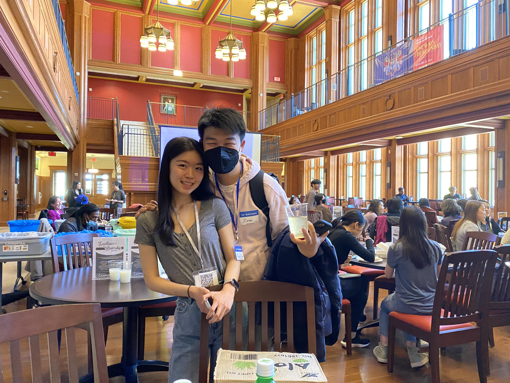
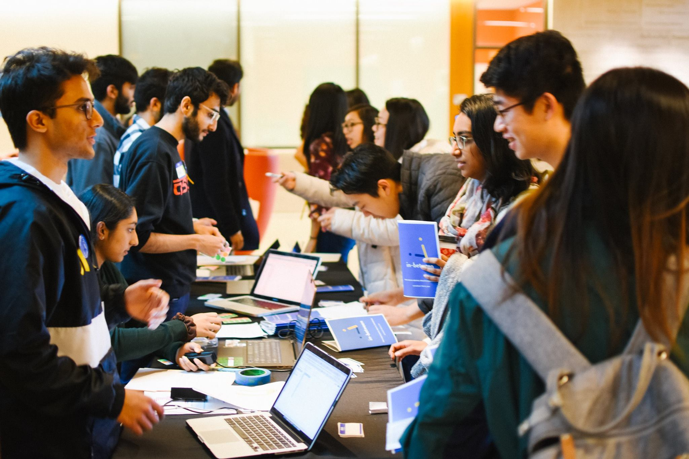
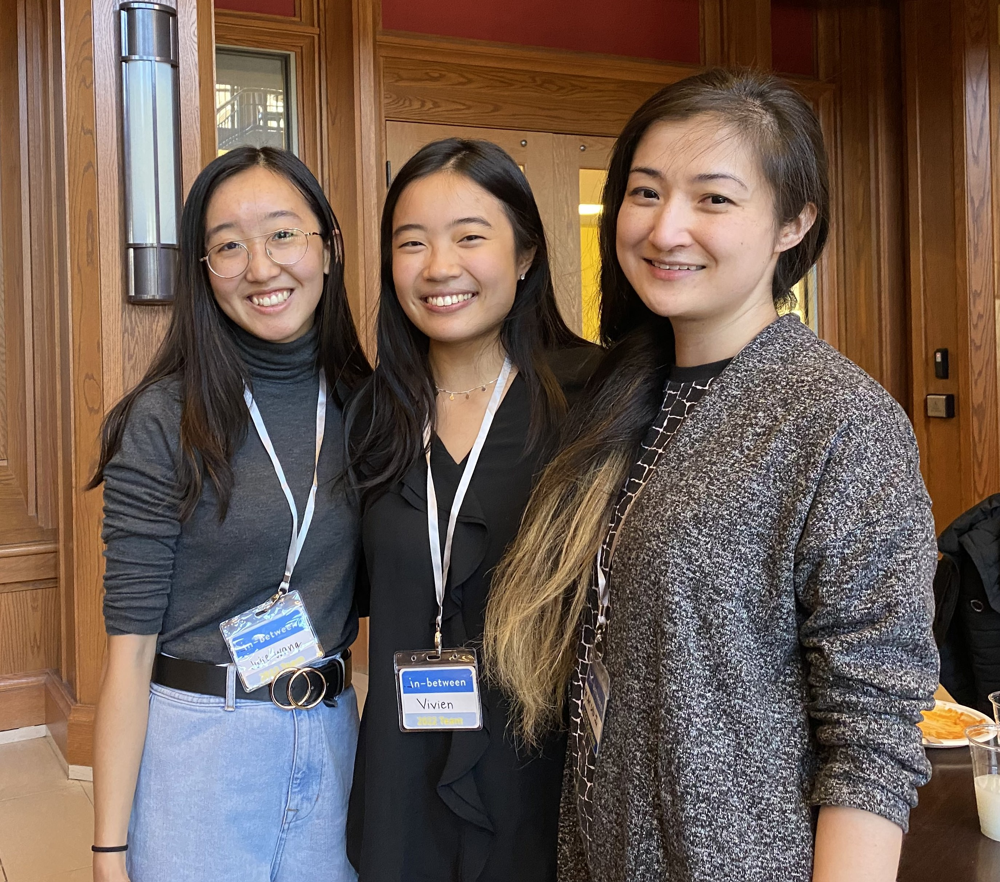
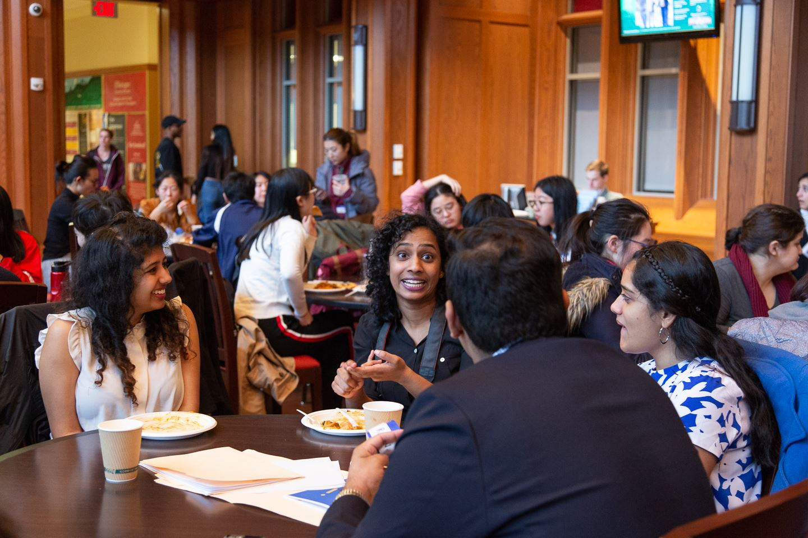
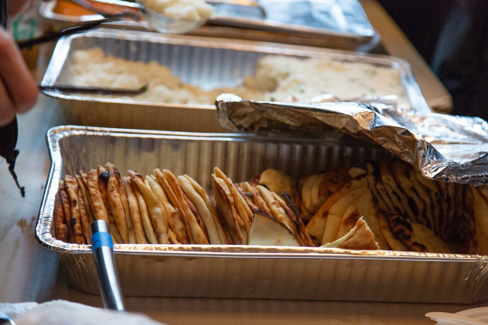
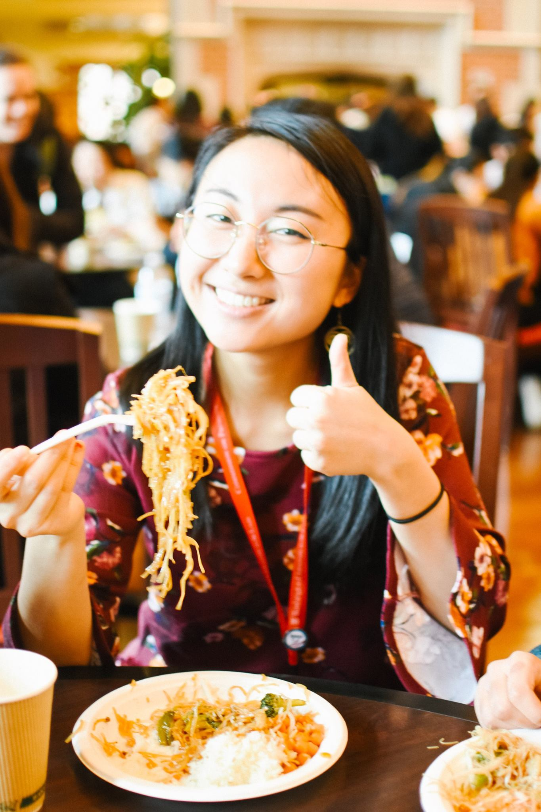

so, why should i attend?
talks
We bring passionate, supportive speakers from across the nation straight to you. They share their insights and, more importantly, are eager to chat. in-between is not a lecture. it's a dialogue.
Hover over speaker photos to see who we've brought in before!
Find prior conference schedules, speaker lists, and photos here. (opens in new tab)
Jason Y. Lee, founder of Jubilee Media

Dr. Mimi Khúc, Georgetown University, Open in Emergency: A Special Issue on Asian American Mental Health

Dr. Vania Manipod, Freud&Fashion @drvaniamanipod

Dr. Han Ren, psychologist and influencer @dr.han.ren

Matthew Diep, Founder of Psypher
Charles Yu, author of Interior Chinatown

meets
Attending in-between lets you bump shoulders with like-minded peers; you're all attending as fellow allies. Grow with each other.
If you want to help organize in-between, we're always looking for amazing teammates. (opens in new tab)
-

- 
- 
- 
-

- 
eats.
(lots. free.)
-

- 
-

- 
-

-

-

-